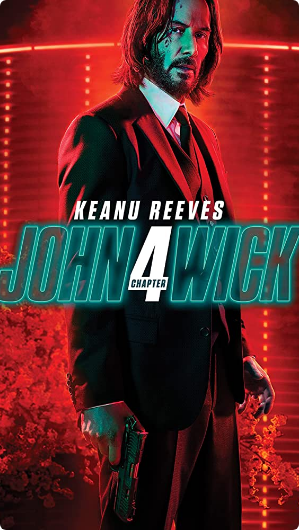

John Wick 4
John Wick 4 comienza con el personaje del título (Keanu Reeves) huyendo de nuevo mientras tiene a cientos de asesinos pisándole los talones. El villano principal de la serie es el Marqués de Gramont (Bill Skarsgård), un líder de la Alta Mesa que sigue aumentando la recompensa por la cabeza de Wick mientras también arregla algunos asuntos dentro de la organización, incluyendo la posible eliminación de Winston Scott (Ian McShane) y algunas de las decisiones que tomó en el pasado.